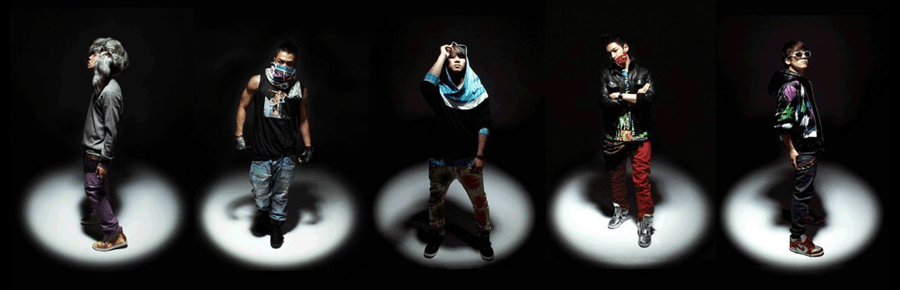

基本信息
bigbang由权志龙、崔胜贤、东永裴、姜大声、李胜贤五位成员组成。于2006年出道的韩国组合，2006年8月19日，在韩国首尔奥林匹克竞技场举行的YG Family世界巡回演唱会首尔站上，Bigbang正式出道[4] 。之后跟TONY AN的校服公司SKOOLOOKS正式签下了为期6个月的广告代言合同。8月30日，MBC的音乐银行，给了他们长达8分钟的舞台，五个人的介绍DANSE和两首歌的完整现场表演。第一张同名单曲《BIG BANG》发行的第12天，9月10日，他们举办了首次的歌迷见面会，5天后又迎来了首次showcase，之后开始了正式的宣传。9月23日，Bigbang在MBC MusicCore正式以新人身份登上舞台。9月28日，Bigbang发行第二张单曲《BigBangis VIP》。
二单发行后不到一个月，Bigbang与FILA签订3个月的代言合同，并在11月获得CY World选定“10月的新人”，11月22日，Bigbang发行第三张单曲《Bigbang03》。11月25日，Bigbang入围2006 Mnet KM Music Festival最佳新组合赏。12月22日，Bigbang发行首张正规专辑《BIGBANGVOL.1 SINCE2007》。12月30日，Bigbang在首尔蚕室体操竞技场举办第一次单独演唱会“THE REAL”，由此，官方歌迷会“VIP”成立。在2006年底MBC的歌谣大对决的现场，Bigbang作为开场的表演嘉宾，演唱了《BIGBANG》，《LA LALA》，《V I P》的串烧版[3] 。 2007年5月，Bigbang开始进行全国巡回演唱会BIGBANGLive Concert Tour“Want You”，途径仁川、春川、大邱、昌源四个城市。7月，Bigbang推出了第一张迷你专辑《谎言》 2011年，BigBang以组合姿态回归韩国歌坛[6] ，成为历史上第一个获得MTV 欧洲音乐大奖“Worldwide Act”的亚洲组合，并于2012年上半年登上美国格莱美官方网页，成为首个被格莱美介绍的韩国歌手 2012年7月，BigBang首度到中国巡演 2013年，五位成员各自进行solo音乐活动 2014年4月，Bigbang等18名艺人成为所属社YG娱乐公司的股东 2015年4月1日，韩国娱乐公司YG通过官方微博公开2015年旗下艺人首个回归的是组合Bigbang Bigbang是2006年YG Entertainment推出的重点新人组合。bigbang为宇宙大爆炸之意，寓意bigbang这个组合对于韩国歌谣界具有重要的影响。五位成员分别为权志龙（GD），崔胜贤（T.O.P），东永裴（太阳），姜大成（大成），李胜贤（胜利）。 BigBang在2006年8月19日于韩国首尔奥林匹克竞技场举行的YG FAMILY10周年演唱上正式出道。对于BigBang，公开过的只有10集的真实记录片《Bigbang出道实录》。对于一个甚至从未露过面的组合，记录片在网上的收看次数却达到了160万次。 2007-2008年，横扫韩国乐坛的《谎言》《一天一天》由队长GD谱词谱曲，创下强大的记录。在韩国的大街小巷，无论是年轻人或者是年长者，口中都哼着他们的歌曲。仅两年便在各大颁奖礼多次获得“年度最佳男子组合”和“年度歌曲”等大奖。 2008-2011年，太阳、胜利、GD&TOP先后solo。全员也成功进军日本，好评如潮并且都取得了骄人的成绩。BigBang的任何一位成员在韩国的歌谣界都能独当一面 2011年，bigbang回归韩国歌谣界时，成为了历史上第一个获得MTV 欧洲音乐大奖 “Worldwide Act”的亚洲组合，再次显示了亚洲天团的强大气势。 2012年上半年多次登上美国格莱美官方网页，是首个被格莱美介绍的韩国歌手。 |


